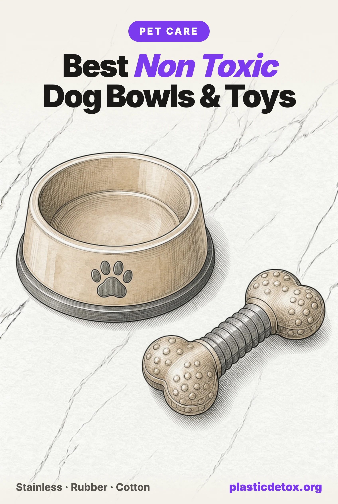

Best Non Toxic Dog Bowls and Toys: Plastic, Lead, and the Law That Skips Pets (2026)

The 30 Second Summary
- Microplastic showed up in every single pet tested, in two separate studies. A 2019 test of pet feces found PET and polycarbonate in 100% of dogs and cats, at levels a diet alone could not explain. A 2024 study found it in every canine testis examined, correlated with lower testis weight. A licked bowl and a chewed toy are two of the most direct, repeated contact points in between.
- A scratched plastic bowl is built to shed. Every crack from a fork, the dishwasher, or a dog's own teeth is a spot for bacteria to colonize and for the plastic itself to flake into food and water. Melamine adds its own migration problem under hot food, measured directly in human biomonitoring.
- The lead law for dishware skips your dog's bowl too. CPSIA caps lead at 90 ppm in a glaze, but only for products made for children. Two tested ceramic bowls came in well above that anyway, one at 190 ppm lead on the actual food surface, and neither sale broke any law.
- Stainless has nothing to shed or glaze. Our top pick, 304 stainless steel bowls, skips the plastic and the ceramic question at once. If you want ceramic specifically, Emerson Creek Pottery is the one we found with an actual lead result on record.
- A nylon or TPE chew is plastic your dog is meant to wear down. Benebone's own safety page says pieces come off and get eaten. Kong's natural rubber Classic and Mammoth's 100% cotton rope do the same job without putting a named plastic in the ingested path.
What's Actually Ending Up in Your Dog
Before getting into what a bowl or toy is made of, it helps to know what actually shows up on the other end. In 2019, researchers at the University at Albany tested pet food and pet feces from across the US for PET and polycarbonate microplastics, publishing in Environmental Science & Technology. Every sample came back positive: 37 of 37 dogs, 41 of 41 cats. The concentration in the feces ran one to two orders of magnitude higher than in the food itself, meaning diet alone could not explain it. Something else in a pet's daily environment is putting plastic into its gut.
A 2024 study from the University of New Mexico, the same lab behind the 2026 finding of microplastics accumulating in the human brain, went further. Researchers measured twelve types of microplastic in testicular tissue from 47 dogs and 23 humans, published in Toxicological Sciences. Every tissue sample, canine and human, came back positive, and in the dogs, higher levels of PVC and PET specifically tracked with lower testis weight. Neither study can say a chewed toy or a licked bowl is the source. What they establish is that the plastic categories sitting in a dog's toy box and food aisle are the same ones turning up inside a dog's body, at levels linked to a measurable physical effect.
A bowl licked clean twice a day and a toy chewed for hours are two of the most direct, repeated contact points a pet has with plastic outside of food. Both are covered below, alongside the ceramic and metals findings that turned out to matter just as much.
The Scratched Bowl Nobody Replaces
The cheapest, most common bowl in any pet aisle is plain polypropylene or HDPE, and the plastic itself is not automatically a skip. The failure mode is what daily use does to it. Every scratch from a fork, a dishwasher cycle, or a dog's own teeth against the rim is a crack the material can shed particles from, and independent testing of food contact polypropylene under hot, fatty conditions has measured tens of thousands of microplastic particles released per liter, most of them under 5 microns, small enough to pass straight through a rinse. A bowl covered in fine scratches is also, separately, a surface bacteria colonizes far more readily than ceramic or steel, which is the more immediate reason vets tell owners to retire one that looks cloudy or dull rather than shiny.
Nothing about this is unique to a cheap brand. It is a property of the material wearing the way plastic wears. A bowl that still looks new is a different object from the same bowl two years and one dishwasher a week later, and the point to act on is the scratches, not the logo on the box.
Why Your Dog's Bowl Has No Lead Law Either
A toddler's plate and a dog's bowl can be made in the same factory, glazed with the same pigment, and sold three aisles apart. Only one of them is illegal to sell with too much lead in the glaze.
The Consumer Product Safety Improvement Act caps lead at 90 ppm in a coating or glaze and 100 ppm in the substrate underneath it, and it fails a product outright above those lines. But CPSIA was written for products made for children. A dog does not fall under it, and neither does the bowl it eats from twice a day for the length of its life. There is no federal lead or cadmium limit for pet dishware or pet toys, and no federal limit on plastic content in either, full stop.
This is not a hypothetical gap. In 2008, the Center for Environmental Health used California's Proposition 65 to force lead disclosures and reformulation out of Aspen Pet, Doskocil, Petco, PetSmart, Petstages, Vo-Toys and several other toy and bowl makers, in two separate settlements over lead found in dog and cat products. More recently, the Ecology Center's HealthyStuff project XRF tested over 400 pet beds, chews, collars and leashes and found a detectable hazardous chemical in 45 percent of them, with roughly a quarter of the toys, beds and leashes carrying lead and about 28 items over 300 ppm, the old federal limit for a children's product. The pattern is old, it is documented, and nothing about the underlying law has changed since.
None of this means every pet bowl on a shelf is contaminated. It means the label "pet safe" is marketing, not a measurement, and the products that actually get tested are the ones somebody like Lead Safe Mama bought and ran through an XRF analyzer themselves. Two of those results are below.
What Independent Testing Found in the Ceramic Aisle
Lead and cadmium in ceramic live in the glaze and the pigments used to decorate it, not in the clay body. That means two bowls from the same brand, in different colors, can read completely differently, which is exactly what the testing below shows.
| Bowl | Spot tested | Lead | Cadmium |
|---|---|---|---|
| Frisco (Chewy's house brand) | Glazed food surface | Non detect | 85 ppm |
| Frisco (Chewy's house brand) | Printed logo, bottom | Non detect | 96 ppm |
| Frisco (Chewy's house brand) | Unglazed edge | Non detect | 103 ppm |
| Winifred & Lily (pink glaze) | Glazed food surface | 190 ppm | 20 ppm |
| Winifred & Lily (pink glaze) | Printed logo, bottom | 495 ppm | 20 ppm |
| Emerson Creek Pottery (Iris glaze) | Glazed food surface | Non detect | Non detect |
| Emerson Creek Pottery (Iris glaze) | Unglazed rim and underside | 17 to 27 ppm | Non detect |
Read against the bars this site uses for any other durable good: 85 to 103 ppm cadmium is more than double Washington State's 40 ppm limit, the strictest cadmium bar in force anywhere in the US. 190 ppm lead, measured on the actual surface a dog eats off, is more than double the 90 ppm line a children's product would have to clear. Neither Chewy nor Winifred & Lily broke a law selling either bowl, because no law applies. Both readings come from Lead Safe Mama's own XRF testing, published with the limit of detection stated, which is the tier of evidence this site treats as a finding rather than a claim.
Emerson Creek Pottery is the one ceramic maker we found with a clean result on the actual food surface rather than just a "lead safe" label. Its stoneware bowls are handmade in Bedford, Virginia, and the glazed Iris pattern tested non detect for lead where a dog's tongue meets it, with only trace lead in the unglazed rim, well under the bar a substrate is judged against. That verdict covers the glaze that was actually tested. Colored glazes vary by pigment, the same way Frisco's logo ink read differently from its food surface, so buy the classic tested colorway rather than assuming every finish is equal.
The reliable way to skip the question is a bowl with nothing to glaze at all. Food grade 304 stainless steel has no coating and nothing to leach, which is why it is our top pick below, and it costs less than most of the ceramic options in this section.
The Chew Toy That Is Plastic in Disguise
A chew toy's whole job is to be gnawed, which makes the materials question different from a bowl's. The question is not just what touches your dog's mouth, it is what comes off in it.
Nylon chews fail this outright. Benebone's own safety page states plainly that "as any chew toy or bone wears down, it is possible that some of it may be eaten." That is the maker, not a critic, describing the product's normal use: nylon, a named plastic, worn down and swallowed by design. Veterinary case reports document nylon fragments causing intestinal obstruction when a piece comes off whole rather than in digestible shavings. SPOT's Bam-Bones line does the same thing with a bamboo fiber marketing angle over the same nylon binder. Both are a skip on this site, and a one piece natural rubber chew does the identical job without the swallow risk.
West Paw's Zogoflex is a synthetic plastic, not rubber
Zogoflex, the material behind West Paw's popular Toppl, Tux and Hurley toys, is 100 percent virgin thermoplastic elastomer, a synthetic plastic, not natural rubber, though it is marketed in the same natural, eco friendly tone. West Paw states it is BPA and phthalate free and made in the USA, which is a real and checkable claim, but the brand does not say what happens to a piece a dog bites off, and publishes no independent test of the material. Owner reports of aggressive chewers breaking off and swallowing pieces are common enough that West Paw's own chew strength guide tells owners to match a toy to their dog and retire a damaged one, sound advice, but a precaution the product itself cannot enforce. That keeps it at careful rather than the skip a maker's own admission earns Benebone: nobody here has said a piece is meant to be eaten, only that pieces can come off.
Rubber, Rope, and the Toys That Pass
Natural rubber is close to the ideal chew material: it is not on any hazard list, it is not designed to be swallowed, and firm rubber shapes like Kong's Classic hold up to moderate chewing for years. The one honest caveat, from independent testing, is a trace of cadmium in the red colorant specifically, which does not change the verdict but means the toy is a heavy metal free chew surface rather than a heavy metal free object end to end. Power chewers who destroy softer toys quickly should size up rather than switch materials.
Cotton rope is the simplest alternative in the entire category: a plant fiber with no named hazard chemistry, nothing for saliva or heat to pull out of it, and the added benefit of flossing a dog's teeth as the fibers work between them while chewing. The caveat is real and worth stating plainly: plenty of rope toys on the same shelf, including other colors from the same maker, are a cotton polyester blend or dyed, neither of which this verdict covers. Buy the plain, undyed, 100 percent cotton version specifically.
Melamine, Tennis Balls, and What Else to Skip
Melamine bowls, run through the same matrix as anything else
Melamine sits in the same highest risk polymer column as PVC and polystyrene on the materials matrix this site applies everywhere, because the resin can release its own monomer under heat, and a bowl marketed for wet food is marketed for fat, the contents tier that pulls the most out of a plastic. This is not just a theoretical matrix position: a 2009 biomonitoring study in Biomedical and Environmental Sciences measured urinary melamine jump from 1.31 to 8.35 micrograms after a single hot meal eaten off melamine tableware, direct evidence the resin migrates in ordinary use. That study tested people, not pets, but it is the same resin and the same hot-food mechanism. Dry kibble in a melamine bowl is a lower risk pairing; wet or mixed food in the same bowl is not. A vet grade, single material bowl avoids the question entirely.
Tennis balls
The yellow felt on a tennis ball has historically been dyed with a lead chromate pigment, and an informal but widely cited 2007 test of 24 toys by a nurse found detectable lead in 48 percent of tested tennis balls, one at 335.7 ppm. We could not find a modern independent lab retest of current production to confirm whether that number holds today, so we are naming the finding and its age honestly rather than either dismissing it or treating a 2007 spot check as current data. Until a newer test exists, a ball marketed specifically as pet safe felt, or a non felt rubber fetch toy, sidesteps the question entirely.
Our Picks
Every pick below passed the same check this site runs on anything: what it is made of, independent test results where they exist, lawsuits, and recalls. All were in stock and buyable at publication, and review counts were current the day we checked.

304 Stainless Steel Dog Bowls (2 Pack)
Food grade 304 stainless with a non skid rubber base, dishwasher safe. Nothing glazed, nothing to test. Buy 304 food grade specifically; cheaper imported stainless has failed lead testing before.
View →
Kong Classic Dog Toy
Firm natural rubber, not plastic, in a shape built for moderate chewers. Stuffable with treats, dishwasher safe. Independent testing found a trace of cadmium in the red colorant specifically.
View →
Mammoth Flossy Chews 100% Cotton Rope
Plain white, 100 percent North American cotton, no dye, no synthetic blend. Flosses teeth while a dog chews. Mammoth also sells dyed and cotton poly versions; this is the plain cotton one.
View →If you want ceramic specifically
Emerson Creek Pottery's Classic Pet Bowl is the one ceramic bowl we found with an actual lead result on record rather than just a lead safe claim. Handmade stoneware from Bedford, Virginia, since 1977, it tested non detect for lead on the glazed food surface, with only trace lead in the unglazed rim. It runs $25 to $27.50, rated 4.95 out of 5 across 40 reviews, and is sold direct from the maker rather than on Amazon. The verdict covers the classic glaze that was actually tested; other colorways have not been individually checked, the same caveat that applies to any decorated ceramic on this site.
Your own bowl or toy is not guaranteed to be one of the five we named. Type any brand into Product Check, on the site or in the app, for an instant verdict against the same independent testing, recalls and materials standard used throughout this article.
Brands We Did Not Pick
Frisco (Chewy's house brand) ceramic bowls
Lead Safe Mama's XRF test of this ceramic bowl found cadmium at 85 to 103 ppm across the glaze, logo and edge, while lead was non detect at every spot. Frisco spans hundreds of products in many materials; this finding is about the ceramic bowl line specifically, not the brand's stainless or plastic pieces. Chewy exclusive, not sold on Amazon.
Winifred & Lily ceramic bowls
Lead Safe Mama's XRF test of a pink glazed Winifred & Lily bowl found 190 ppm lead on the food contact surface itself and 495 ppm on the printed logo on the bottom, a level that would fail a children's product outright. Pet dishware has no equivalent legal limit, so nothing about the sale is unlawful, which is exactly the gap this whole article is about.
Benebone and SPOT nylon chews
Benebone's own safety page states that pieces of its nylon chews are expected to be eaten as the toy wears down. SPOT's Bam-Bones line binds bamboo fiber with the same nylon. Both put a named plastic directly in a dog's digestive tract by the maker's own description of normal use, and nylon fragments are a documented cause of intestinal obstruction in veterinary case reports.
West Paw Zogoflex toys
A 100 percent synthetic thermoplastic elastomer sold in the same tone as a natural rubber alternative. BPA and phthalate free is a real claim; what happens to a piece a strong chewer bites off is not addressed by the maker, and no independent test of the material is on record. The brand's own chew guide advises matching toy strength to the dog and retiring damaged toys, useful advice that the product cannot enforce on its own.
Frequently Asked Questions
Is there a lead limit for dog bowls?
No. The federal law that caps lead at 90 ppm in a glaze or coating and 100 ppm in the substrate, the Consumer Product Safety Improvement Act, applies only to products made for children. A pet bowl can legally carry any amount of lead in its glaze. Independent XRF testing has found ceramic pet bowls at levels that would fail a children's product outright, including one at 190 ppm lead on the actual food contact surface, with no law broken by selling it.
Are ceramic dog bowls safe?
Only when the specific glaze has a lead and cadmium result on record, because lead and cadmium in ceramic live in the glaze and the pigments, and two bowls from the same collection can differ by color. Independent testing has found both a major retailer's house brand bowl at 85 to 103 ppm cadmium and a boutique brand's pink glaze at 190 ppm lead on the food surface. A USA made stoneware bowl tested by Lead Safe Mama came back non detect on the glazed surface. Ask for a lead result before buying a decorated ceramic bowl, the same standard this site applies to human dishware.
Is Kong safe for dogs?
The Classic, in natural rubber, is one of the cleanest chew toys on the market: rubber is not a named hazard and nothing about it is designed to be swallowed. The one honest caveat is the red colorant, where independent testing found a trace of cadmium, which does not change the verdict but means the toy is not a heavy metal free object, only a heavy metal free chew surface. Power chewers who destroy toys quickly should size up or switch to an even simpler natural rubber shape.
Are nylon dog chews safe?
No, and this is one of the more direct findings on the site. A nylon chew exists to be gnawed, and the maker's own safety guidance for brands like Benebone states that pieces of the toy are expected to be eaten as it wears down. That puts a named plastic directly in a dog's digestive tract by design, and nylon fragments are documented in veterinary case reports as a cause of intestinal obstruction. A one piece natural rubber chew does the same job without either problem.
Are TPE or Zogoflex dog toys the same as rubber?
No, despite being marketed in a similar natural, eco friendly tone. Thermoplastic elastomer, the material behind West Paw's Zogoflex line and similar toys, is a synthetic plastic, not rubber. The maker states it is BPA and phthalate free, which is true and worth something, but publishes no statement about what happens to a piece a dog bites off and no independent test of the material. Owner reports of pieces breaking away under heavy chewing are common enough that the brand's own chew guide recommends matching toy strength to the dog and retiring a damaged toy.
Related Articles
- Best Non Toxic Water Bottles & Tumblers
The same lead pellet and coating questions, for the bottle you drink from. - Best Plastic Free Food Storage Containers
The glass and steel logic behind our stainless bowl pick, applied to your own kitchen. - Best Non Toxic Bakeware
The same uncoated stainless standard, applied to what you cook in. - BPA Free Is Not Safe
Why a clean sounding label is a marketing claim, not a measurement. - Non Toxic Baby & Toddler Products Guide
The lead and cadmium law that does apply, for the products sold three aisles over.